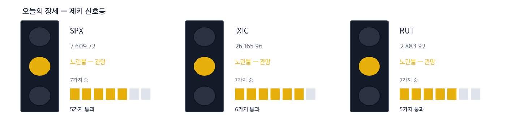
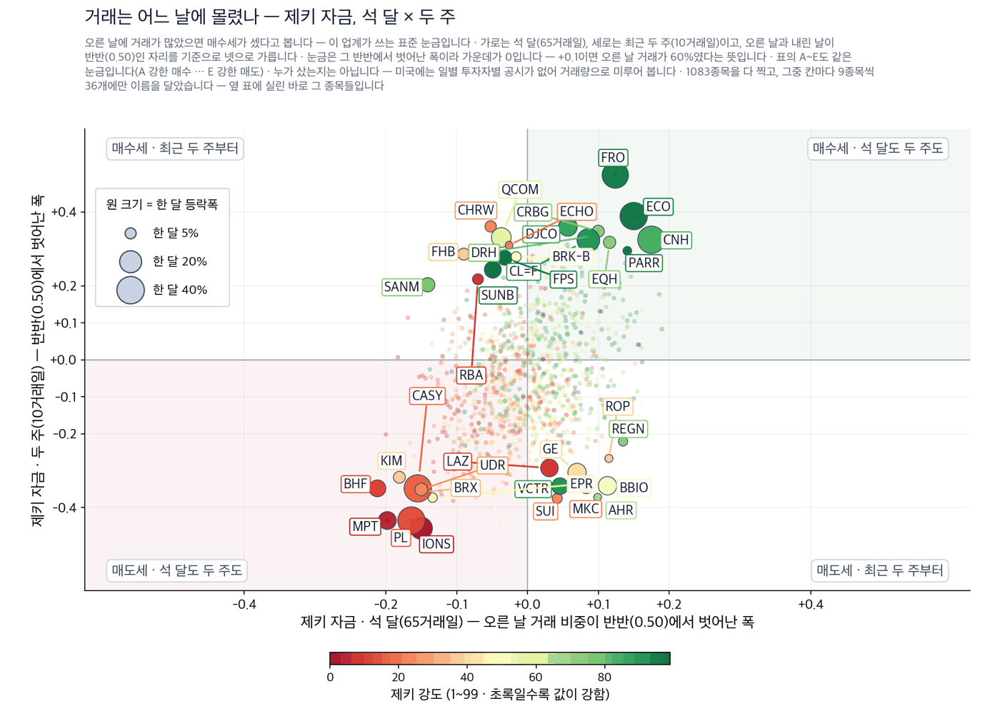
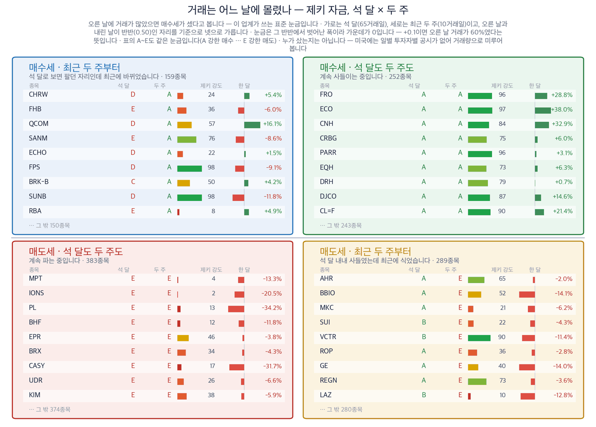

연준이 금리를 올렸습니다. 이유는 금리로 못 잡는 두 가지였습니다
2026년 9월 17일 · 값은 9월 16일 종가 기준입니다
신문에서 저희가 갖고 있지 않은 회사를 찾아, 왜 값을 할 수 있는지 숫자로 적습니다.
S&P 500 7,551.81 (−0.45%) | 다우 51,462.55 (−1.21%) | 미 국채 10년물 5.02% | 기준금리 3.75~4.00% | 제키 신호등 노란불 |

이 그림 읽는 법
| 켜진 등 | 오늘의 국면입니다. 초록은 매수 우위, 노랑은 관망, 빨강은 매수 자제입니다. |
| 채워진 칸 | 7가지 조건 중 몇 개를 통과했는지입니다. 칸이 많이 찰수록 시장 구조가 튼튼합니다. |
| 칸이 다 찼는데 노랑·빨강이면 | 다른 이유로 한 단계 낮춘 것입니다. 그림 아래에 그 이유를 적었습니다. |
제키 신호등은 저희가 시장 국면을 7가지로 재서 하나로 줄인 것입니다. 초록불은 사기 좋은 국면, 노란불은 관망, 빨간불은 매수 자제입니다. 오늘 3개 지수가 모두 노란불입니다.
연준이 9월 16일 기준금리를 0.25%포인트 올렸습니다. 3년 만이고 표결은 만장일치였습니다. 18명 가운데 16명이 올해 한 번 더 올린다고 봤습니다.
인상 이유로 지목된 것은 두 가지입니다. 이란 전쟁이 밀어 올린 에너지 값, 그리고 인공지능 투자가 만든 수요입니다. 금리를 올려도 원유가 더 나오지는 않습니다. 이미 약정된 데이터센터 공사가 멈추지도 않습니다.
그래서 금리에 눌리는 쪽이 아니라 그 두 원인 위에 앉은 회사를 찾았습니다. 4곳을 재서 1곳만 4가지 기준을 모두 채웠습니다. 발레로에너지입니다.
그래서 어떻게 하나: 개장 30분 동안 10년물 국채금리가 어느 쪽으로 가는지 보시면 됩니다. 어제 마감은 5.02%였고 개장 전에는 4.99%입니다.
이번 주 숫자 하나만 기억하신다면 5%입니다. 10년물 국채금리가 2007년 7월 이후 처음으로 그 위에서 마감했습니다. 30년 만기 주택담보대출 금리가 7%에 다가선 것도 같은 자리에서 나왔습니다. 2월에는 6%였습니다.
| 날짜 | 무엇을 보는가 | 넘으면 어떻게 되는가 |
|---|
| 9월 17일 개장 30분 | 10년물 국채금리 방향 | 4.99%보다 내려가면 어제 하락은 되돌림입니다 |
| 10월 28일 | 연준 회의 — 한 번 더 올리는지 | 올린다는 쪽이 굳으면 장기 금리가 다시 오릅니다 |
| 12월 9일 | 연준 회의 — 올해 마지막 결정 | 선물시장은 연내 추가 인상 확률을 90% 가까이 봅니다 |
테마 1 · 모자란 것은 원유가 아니라 경유입니다
원유는 어제 3.2% 내려 배럴당 102.43달러입니다. 그런데 경유 값은 사상 최고 부근입니다. 우크라이나가 러시아 정제설비를 때리면서 정제 능력이 줄었기 때문입니다. 윌리엄 더들리 전 뉴욕 연방준비은행 총재는 경유가 원유 200달러처럼 움직인다고 말했습니다 (월스트리트저널). 그래서 원유를 캐는 회사와 정제하는 회사의 처지가 갈립니다. 어제 하루가 그것을 그대로 보여 줬습니다. 다이아몬드백에너지는 7.62% 내렸고, 발레로에너지는 1.79% 올랐습니다.
종가 404.14달러 · 9월 16일 +1.79% · 한 달 +16.4% · 석 달 +65.5% · 제키 강도 96 · 제키 자금 A
누가 미국 정유사가 · 무엇을 넓어진 정제마진을 · 언제 9월 16일 종가까지 · 어디서 미국 걸프 연안 정제설비에서 · 왜 원유는 남는데 경유로 바꾸는 설비가 모자라서 · 어떻게 원유와 제품의 값 차이가 그대로 정유사 이익으로 남습니다
확인 신호 — 9월 16일 종가 404.14달러는 최근 1년 가운데 가장 높은 값입니다. 이 자리를 지키면 정제마진 이야기가 유지됩니다.
철회 기준 — 9월 1일 종가 361.99달러를 밑돌아 마치면 2주 상승이 지워집니다. 러시아 정제설비가 복구됐다는 보도가 나와도 전제가 사라집니다.
테마 2 · 데이터센터가 못 구하는 것은 전기입니다
어제 S&P 500에서 오른 업종은 3개뿐이었고 그중 하나가 유틸리티입니다. 금리를 올린 날 전기 회사가 오르는 것은 흔한 일이 아닙니다. 밤사이 그 이유를 보여 주는 계약이 하나 나왔습니다. 제너랙이 아마존 데이터센터에 비상 발전기를 대기로 했습니다. 2027년과 2028년 납품분이 24억달러이고, 전체로는 80억달러까지 갈 수 있습니다. 아마존은 제너랙 주식 169만주를 주당 200.93달러에 살 수 있는 권리도 함께 받았습니다.
종가 178.15달러 · 9월 16일 +1.78% · 한 달 −19.5% · 석 달 −32.9% · 제키 강도 15 · 제키 자금 E
누가 발전기 회사가 · 무엇을 아마존 데이터센터 물량을 · 언제 9월 16일 장 마감 뒤에 · 어디서 미국 데이터센터 현장에서 · 왜 정전을 견딜 수 없는 시설이라 예비 전원을 따로 둬야 해서 · 어떻게 납품이 시작되는 2027년부터 매출로 들어옵니다
저희 4가지 기준은 9월 16일 종가까지의 값으로 잽니다. 계약이 알려지기 전의 값이라 4가지를 하나도 채우지 못했습니다. 소식과 값 사이의 이 간격이 오늘 이 회사를 실은 이유입니다.
확인 신호 — 개장 전 거래에서 34% 올랐습니다. 그 상승분이 마감까지 남아 50일 평균 204.62달러를 되찾는지 보시면 됩니다.
철회 기준 — 9월 1일 종가 181.42달러를 되찾지 못하면 계약 소식이 하루로 끝난 것입니다. 제키 자금이 E에 머무는 것도 같은 신호입니다.
테마 3 · 한 곳에만 맡기지 않는 쪽으로
아마존웹서비스가 걸프 지역 시설의 고객 자료 일부를 되살리지 못한다고 밝혔습니다. 봄에 이란 드론에 맞은 곳입니다. 바레인과 아랍에미리트에만 저장했던 자료입니다 (월스트리트저널). 기업이 여기서 배우는 것은 하나입니다. 한 사업자에게, 한 지역에만 맡기지 않는 것입니다. 자료를 여러 곳에 나눠 두는 장비와 소프트웨어를 파는 회사에 그 수요가 옵니다.
종가 192.96달러 · 9월 16일 +1.59% · 한 달 −5.5% · 석 달 +19.7% · 제키 강도 92 · 제키 자금 B
누가 기업용 저장장치 회사가 · 무엇을 자료를 나눠 두려는 수요를 · 언제 9월 16일 종가까지 · 어디서 여러 클라우드에 걸친 기업 전산실에서 · 왜 한 지역이 사라져도 자료가 남아야 해서 · 어떻게 저장 용량과 관리 소프트웨어 판매로 이어집니다
확인 신호 — 9월 16일 종가가 50일 평균 183.21달러 위입니다. 그 위를 지키면 2주 상승이 유지됩니다.
철회 기준 — 9월 1일 종가 183.16달러를 밑돌아 마치면 2주 상승이 지워집니다. 제키 강도가 90 아래로 내려가도 후보에서 뺍니다.
인텔 이야기는 어제 가장 크게 움직인 축입니다. SK하이닉스가 인텔의 오하이오 공장을 빌리거나 함께 쓰는 방안을 논의한다는 보도가 나왔습니다 (월스트리트저널). 인텔은 어제 4.76% 올랐습니다. 개장 전에도 4.85% 더 올랐습니다. 그런데 저희 4가지 기준으로는 2가지만 채웠습니다. 제키 강도는 97로 높지만 한 달로는 1.7% 내렸습니다. 제키 자금은 C입니다. 2주 동안 14.4% 오른 것이 전부입니다. 보도는 아직 확정이 아닙니다. 한국 정부가 반대할 수 있다는 단서도 붙어 있습니다. 그래서 오늘은 종목으로 만들지 않았습니다.
제외 인텔은 오늘 후보에서 뺍니다.
| 테마 | 종목 | 제키 강도 | 근거의 무게 |
|---|
| 경유 부족 | 발레로에너지 (VLO) | 96 | 근거 확실 |
| 데이터센터 전력 | 제너랙홀딩스 (GNRC) | 15 | 근거 없음 |
| 자료 분산 | 넷앱 (NTAP) | 92 | 근거 있음 |
| 미국 내 반도체 생산 (제외) | 인텔 (INTC) | 97 | 확인 필요 |
①한 달 동안 값이 올랐는가 ②제키 강도가 90을 넘는가 ③제키 자금이 석 달 기준 A나 B인가 ④최근 2주에 값이 꺾이지 않았는가. 충족한 수가 딱지를 정합니다.
| 종목 | ①값이
올랐나 | ②강도
90↑ | ③자금
석 달 A~B | ④두 주
안 꺾임 | 충족 | 근거의 무게 |
|---|
| 발레로에너지 (VLO) | O | O | O | O | 4/4 | 근거 확실 |
| 제너랙홀딩스 (GNRC) | X | X | X | X | 0/4 | 근거 없음 |
| 넷앱 (NTAP) | X | O | O | O | 3/4 | 근거 있음 |
| 인텔 (INTC) | X | O | X | O | 2/4 | 확인 필요 |

이 그림 읽는 법
| 점 하나 | 종목 하나입니다. 가로·세로 위치가 두 값을 그대로 나타내고, 가운데 가로·세로로 그어진 두 선이 기준선입니다. 네 귀퉁이의 이름표가 그 칸의 뜻입니다. |
| 점 크기 | 최근 한 달 등락폭입니다. 오르든 내리든 크게 움직였으면 큰 점입니다. |
| 점 색 | 제키 강도입니다. 초록일수록 주가가 시장에서 강합니다. |
| 30종목만 | 이름이 겹치면 못 읽기 때문입니다. 가운데 몰린 나머지는 움직임이 거의 없는 종목들이라 뺐습니다. |

이 그림 읽는 법
| 네 칸 | 가로와 세로 두 값이 각각 기준선을 넘었는지로 넷을 가릅니다. 오른쪽 위는 둘 다 넘은 곳, 왼쪽 아래는 둘 다 못 넘은 곳, 나머지 두 칸은 한쪽만 넘은 곳입니다. 칸 이름이 그 칸에 든 종목의 상태를 한 문장으로 적어 둔 것입니다. |
| 가운데 두 칸 | 두 기간을 견주는 자리입니다. 글자 A~E가 있으면 이 업계가 쓰는 표준 등급으로, A는 강한 매수, B는 매수 우세, C는 매수와 매도가 반반, D는 매도 우세, E는 강한 매도를 뜻합니다(전체를 다섯으로 나눈 순위라 A가 상위 20%입니다). 숫자가 있으면 그 기간에 산 양에서 판 양을 뺀 것입니다. |
| 칸마다 9종목 | 그 칸에서 움직임이 가장 큰 순서입니다. 나머지는 칸 아래에 몇 종목인지만 적었습니다. 옆 산점도가 이름을 다는 종목이 바로 이 9종목씩입니다. |
| 한 달 막대 | 0을 가운데 두고 오른쪽이 상승, 왼쪽이 하락입니다. 길이는 같은 칸 안에서만 서로 견주십시오 — 칸마다 기준이 다릅니다. |
| 제키 강도 | 1~99 순위입니다. 막대가 길수록, 초록에 가까울수록 그 종목의 주가가 시장에서 강합니다. |
하루 2,000만달러 이상 거래되는 1,083종목을 확인했습니다.
이것이 무엇이고 무엇이 아닌지 먼저 밝힙니다. 미국에는 한국 같은 주체별 일별 공시가 없습니다. 외국인·기관이 몇 주를 샀는지 알 수 없습니다. 잴 수 있는 것은 오른 날의 거래량과 내린 날의 거래량을 최근 13주에 걸쳐 비교한 값입니다. 0.50을 넘으면 오르는 날에 더 많이 거래됐다는 뜻입니다. 기관이 모으는지 보는 표준 방법이지만, 집계가 아니라 추정입니다.
매집이 가장 두드러진 5종목
| 종목 | 상승일 대비 거래량 | 한 달 | 기준일 |
|---|
| URGN | 0.69 | -12.5% | 09-16 |
| VEEV | 0.69 | +12.0% | 09-16 |
| CNH | 0.68 | +32.9% | 09-16 |
| KNSA | 0.66 | -3.3% | 09-16 |
| EBC | 0.66 | -7.7% | 09-16 |
분산이 가장 두드러진 5종목
| 종목 | 상승일 대비 거래량 | 한 달 | 기준일 |
|---|
| BHF | 0.29 | -11.8% | 09-16 |
| BIRK | 0.30 | -18.8% | 09-16 |
| MPT | 0.30 | -13.3% | 09-16 |
| ROL | 0.32 | -4.5% | 09-16 |
| KIM | 0.32 | -5.9% | 09-16 |
값이 흐름을 확인해 준 종목 — BIRK는 0.30이고 한 달 동안 18.8% 내렸습니다. 거래량이 말하는 것과 값이 말하는 것이 같습니다.
내리는데 사들이는 종목 — URGN는 0.69로 사는 쪽인데 한 달 동안 12.5% 내렸습니다. 누군가 하락의 반대편을 잡고 있습니다. 이르거나 틀렸거나 둘 중 하나인데, 이 숫자만으로는 어느 쪽인지 알 수 없습니다.
기사와 값이 맞아떨어져도 자금은 따로 봅니다. 아래는 석 달과 최근 2주를 나눠 잰 것입니다. 석 달이 좋은데 2주가 나쁘면 사들이던 쪽이 멈춘 것입니다.
| 종목 | 제키 자금 석 달 | 제키 자금 2주 | 한 달 등락 | 2주 등락 |
|---|
| 발레로에너지 (VLO) | A | A | +16.4% | +11.6% |
| 제너랙홀딩스 (GNRC) | E | C | −19.5% | −1.8% |
| 넷앱 (NTAP) | B | A | −5.5% | +5.3% |
| 인텔 (INTC) | C | A | −1.7% | +14.4% |
제키 자금은 오르는 날에 거래가 몰렸는지를 A부터 E까지로 매긴 것입니다. 지금 어느 쪽에 있는지를 보여 줄 뿐이며, 다음 한 달을 맞히지는 못합니다. 두 시장 20년 자료로 4번 재 봤고, 4번 모두 예측력이 없었습니다.
실린 종목은 어떻게 됐나
09/09부터 실린 40종목 가운데 5거래일이 지난 4종목. 기준은 실린 날 종가, 비교는 같은 기간 S&P 500.
무엇인가. 저희가 신문 기사에서 찾아 이 다이제스트에 이름을 올린 회사들을 그날 종가로 적어 두고, 그 뒤 값이 어떻게 됐는지 세는 표입니다. 근거가 굳은 정도에 따라 나눠 셉니다.
무엇을 위한 것인가. 기사에서 고른 종목이 실제로 값을 하는지 숫자로 남기기 위해서입니다. 이름을 올린 날 그대로 적으므로, 좋았던 것만 나중에 골라낼 수 없습니다.
아닌 것. 추천이 아니고, 저희가 산 종목도 아니며, 아직 판정도 아닙니다. 판정은 두 시장 합쳐 60건이 찼을 때 미리 정해 둔 검정으로 한 번만 합니다.
| 근거의 무게 | 종목 | 오름 | 내림 | S&P 500보다
나음 | 평균 초과 |
|---|
| 근거 확실 | 2 | 2 | 0 | 2/2 | +8.4% |
| 근거 있음 | 1 | 1 | 0 | 1/1 | +2.5% |
| 테마 제외 | 1 | 0 | 1 | 0/1 | -3.4% |
| 전체 | 4 | 3 | 1 | 3/4 | +4.0% |
지금 76건이 모였습니다. 그 전에는 오르고 내린 수만 셉니다. 아직 5거래일이 안 된 종목 36건은 빠져 있습니다. 모의 집계이며 거래비용을 빼지 않았습니다.
- 개장 30분 — 10년물 국채금리가 4.99%에서 어느 쪽으로 가는지 봅니다.
- 오전 — 제너랙이 개장 전 상승분을 얼마나 지키는지 봅니다.
- 마감 30분 전 — S&P 500과 나스닥이 50일 평균선을 되찾고 마치는지 봅니다.
금리를 올린 다음 날은 되돌림이 잦습니다. 선물시장은 개장 전 상승을 가리키고 있습니다. 하루 움직임 하나로 결론을 내리지 않으시는 편이 좋습니다.
제키 강도는 저희가 보는 미국 상장 종목 가운데 값이 몇 등인지를 1부터 99까지로 매긴 것입니다. 제키 자금은 오르는 날에 거래가 몰렸는지를 A부터 E까지로 매긴 것입니다. 근거의 무게는 4가지 가운데 몇 가지를 충족했는지입니다. 4가지를 다 채우면 근거 확실, 3가지면 근거 있음입니다. 1~2가지면 확인 필요, 하나도 못 채우면 근거 없음입니다. 저희가 어떤 종목을 사고팔았는지는 싣지 않습니다.
출처 — 월스트리트저널 9월 17일자 지면, 미국 증시 조간 시황, 그리고 저희 시세·수급 자료(9월 16일 종가). 기사의 사실만 가져와 저희 문장으로 다시 썼습니다.
이 다이제스트는 저희가 계산한 값으로 걸러낸 종목을 싣습니다. 개별 투자 자문이 아니며 특정 종목의 매수나 매도를 권하지 않습니다. 실린 등급과 순위는 모두 저희가 계산한 것이고, 모의 포트폴리오 기준입니다. 투자에는 원금 손실 위험이 따릅니다.
본 리포트는 정보 제공 목적이며 개별 투자 자문이 아닙니다. ZekiRex™ Apex US는 1,000만 달러 규모의 모의 포트폴리오를 규칙 기반으로 운용합니다. 실제 계좌도, 주문도, 사고판 일도 없습니다. 표시된 성과에는 수수료와 세금, 매매 시 가격 미끄러짐이 반영되지 않았습니다. 종목 자료에는 상장폐지된 회사가 빠져 있습니다. 그래서 성과가 실제보다 높게 나오는 치우침(생존편향)이 있습니다. 과거의 성과는 미래를 보장하지 않으며, 투자에는 원금 손실 위험이 따릅니다.
모의 포트폴리오를 기준으로 한 정보이며 투자 자문이 아닙니다.
This is the Rex Way, ZekiRex™